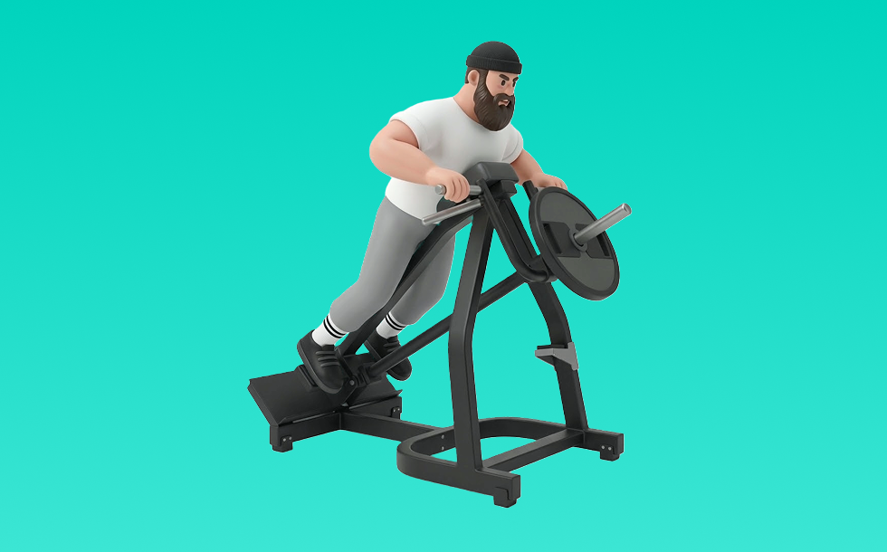

Tバーロウ

Tバーロウとは、マシンを使って「引く」動作で背中（広背筋、僧帽筋、菱形筋）＋腕（上腕二頭筋）を鍛える種目です。軌道が安定して狙った部位に効かせやすいのが特徴で、体幹を固め、みぞおち付近へ引いて戻す動作を繰り返します。背中の厚み・広がり作りや姿勢改善が期待できます。
- 対象部位
- 背中
- 器具
- マシン
- 記録形式
- 重量・回数
- 別名
- Tバーロー
YouTube動画
-
【背中改善の秘策】上背部の厚みならこれ！Tバーローを寺島遼が徹底解説！
-
『Tバーローイング』のやり方・正しいフォームをご紹介！背中の厚み・広がりを効率よくつけよう◎
-
【有料級】広背筋を下から広げるトレーニング法！ 【新・バズーカ岡田チャンネル】 #バズーカ岡田
-
01 Tバーロウ
-
Tバーローイングのやり方！広背筋に効く３つのフォームのポイントを実演
-
背中の分厚さのポイントは"T"！背中トレの必須種目 3選！
-
【筋トレ初心者】背中トレ！簡単！Tバーロウのやり方
-
PLATE-LOADED Tバーロウ（トレーニング動画）
-
Tバーロウ基礎編やり方
-
【Tバーロウ】構造上の問題を解決した件
-
山本義徳先生に教わる！みんな大好きTバーロウ！［高重量背中］③
-
背中の筋肥大に最も良い種目は？【背中のティアリスト】
-
【背中トレ解説】Tバーロウとマググリップについて！
-
【山岸秀匡】Tバーローをやる時に意識することは？【切り抜き】
-
背中の厚みはこの種目！！【Tバーロウ】
-
【背中トレ】Tバーロウ！これだけ意識！
-
Tバーロウ攻略編ポイント
-
質問 Tバーロー、やる時のポイントは？山岸秀匠☆YAMAGISHIHIDE☆切り抜き☆まとめ☆KIRINUKI☆MATOME
YouTubeショート
-
Tバーローの使い方！
-
横川君から学ぶ背中トレ
-
背中を厚くするポイント#なーすけ #カネキン #筋トレ
-
【広背筋】胸パット付きのティーバーローで上背部を鍛えるおすすめのやり方とは！？#shorts #筋トレ #フィジーク
-
ベントオーバーロウの正しいやり方〜3つのポイント〜 #筋トレ #フィットネス
-
広背筋めっちゃ効く！仮設Tバーロー
-
【使用方法】Tバーローワイドver
-
世界の有名選手らも鍛える時に欠かせなっかた#Tバーロウ #筋トレ #筋トレ初心者 #鍛える#広背筋
-
【IFBB PRO 上里選手】筋トレ初心者必見!!背中種目で注意すべきこと
-
背中を最大限に鍛える種目3選【筋トレ】
-
かっこいい背中を作る背中トレティアリスト#shorts #youtubeshorts #筋トレ大学 #筋肉博士#ティアリスト#ティアキン #tierlist #背中トレ#山本義徳
-
Tバーロウ、モンスタージャパン安治川正人
-
分厚い背中を作る7種目🔥 #筋トレ #ボディビル #背中トレ
-
正しいダンベルロウ4つのポイント #筋トレ
-
どのジムでもできる最強上背部種目！
-
背中への刺激を！仮設Tバーロウ
-
初心者必見‼︎背中トレの極意（ベントオーバーローイング編） #筋トレあるある #筋トレ初心者 #背中トレ #ベントオーバーローイング#パーソナルジム#トレーナー採用
-
【背中を鍛える】ダンベルベントオーバーロウ【ボディメイク・ダイエット】
-
背中に一番効く種目【Tバーローイング】#Shorts
-
正しいデッドリフト4つのポイント#筋トレ #デッドリフト
-
ダンベルだけで背中をデカくする筋トレ💪
-
Tバーロウ#筋トレ#ストレッチ ＃背中＃広背筋
-
【ダンベル】背中トレ4選 #筋トレ
-
個人的に最も効果のある背中の種目3つを紹介 #筋トレ #フィットネス
-
【背中トレ】TバーロウMAX対決‼️#workout #gym #shorts
-
新マシン Tバーロウの使用方法 #shorts
-
Tバーロー
-
215【背中トレ】チェストサポーテッドTバーロウ（Tバーロー）で背中の筋肉を鍛える【アラフォーの筋トレ】毎日投稿 筋トレ初心者向けモチベーション #shorts
動作方法
- 体幹を安定させ、背中が丸まらない姿勢を作る
- 肘を後方へ引き、肩甲骨を寄せる
- 勢いを使わず、ゆっくり戻す
動作ポイント
- 背中を丸めない
- 首に力を入れすぎない
- 戻しを速くしすぎない
ワンポイントアドバイス
- 腕ではなく背中で引く感覚を優先する
- 反動が増えたら重量を一段下げる
目的別回数設定
目的や体力に応じた一般的な目安です。無理のない範囲で調整してください。
- 筋力アップ
- 1〜5回
- 筋肥大
- 6〜12回
- 持久力アップ
- 13〜20回
YouTube動画について
動画はYouTubeの公開情報をもとに表示しています。内容は投稿者によるもので、Biggrによる監修ではありません。
アプリを入手
筋トレやトレーニングの記録はBiggrにお任せください。今すぐ無料で使い始められます。